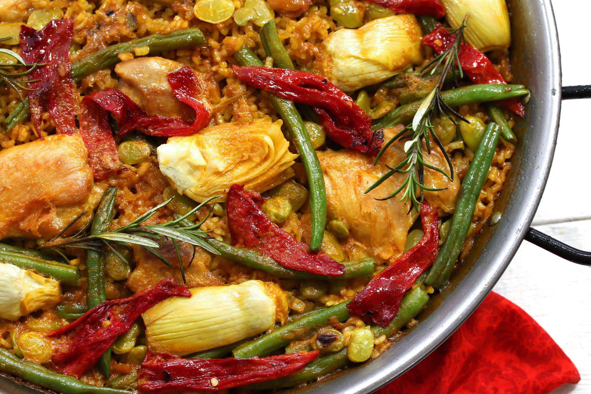

1. Paella Valenciana
Ingredientes
- 400 g de arroz
- 800 ml de caldo de pollo o pescado
- 200 g de conejo troceado
- 200 g de pollo troceado
- 150 g de judía verde (ferraura)
- 100 g de garrofón
- 2 tomates maduros
- 1 pimiento rojo
- 2 dientes de ajo
- Aceite de oliva
- Azafrán o colorante
- Sal y pimienta
Preparación
- Preparar el sofrito: En una paellera amplia, calienta aceite de oliva y dora los trozos de pollo y conejo hasta que estén dorados por todos lados. Retíralos y resérvalos.
- Cocinar las verduras: En el mismo aceite, añade las judías verdes y sofríelas hasta que estén tiernas. Añade el pimiento cortado en tiras, los ajos picados y el tomate rallado. Cocina todo junto hasta que el tomate se haya reducido.
- Incorporar el arroz: Añade el arroz a la paellera y mézclalo con el sofrito. A continuación, vuelve a incorporar la carne reservada.
- Añadir el caldo: Vierte el caldo caliente, asegurándote de que cubre todos los ingredientes. Añade el garrofón y el azafrán. Cocina a fuego medio durante 20 minutos sin remover, dejando que el arroz absorba todo el caldo.
- Reposar y servir: Una vez cocido el arroz, retira del fuego y deja reposar unos minutos antes de servir. ¡Listo para disfrutar!